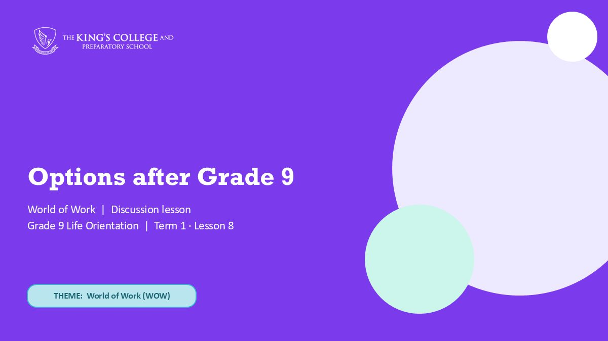

Term 1 · Lesson 8 · Discussion lesson
Options After Grade 9
Start Here
Today I Will
- Name the options after Grade 9
- Compare the NSC and the NCV
- Think about which route suits me
Is university the only way to a good career? Why or why not?
Words to Know
| Word | Meaning |
|---|---|
| NSC | National Senior Certificate: the academic matric, Grades 10–12 at school. |
| NCV | National Certificate (Vocational): a practical, career-focused qualification at a TVET college. |
| TVET college | Technical and Vocational Education and Training college. |
| NQF | National Qualifications Framework: the 10-level ladder of SA qualifications. |
| Learnership | Training that combines classroom learning with paid work experience. |
| Apprenticeship | Learning a trade on the job under a qualified expert. |
Slides

Notes
At the end of Grade 9 you reach an important crossroads. School is compulsory until the end of Grade 9 (or age 15), and then you choose a route: the academic route at school, a vocational route at a college, or learning while working. There is more than one good road.
The NQF Ladder
The National Qualifications Framework (NQF) is a 10-level ladder for all South African qualifications. Grade 9 is about level 1, matric (NSC or NCV level 4) is level 4, a degree is level 7, and a doctorate is level 10. Different routes can lead up the same ladder.
Routes After Grade 9
| Route | Where | What it is |
|---|---|---|
| NSC (National Senior Certificate) | School, Grades 10–12 | Academic matric with 7 subjects; leads to university, college or work (NQF 4). |
| NCV (National Certificate Vocational) | TVET college, Levels 2–4 | Practical, career-focused qualification in a field such as engineering, IT, hospitality or office administration (NQF 4). |
| Learnership | Workplace + training provider | Classroom learning combined with paid work experience; leads to a qualification. |
| Apprenticeship | Workplace | Learning a trade (e.g. electrician, plumber) on the job under a qualified expert, then a trade test. |
NSC or NCV?
| NSC | NCV |
|---|---|
| At school | At a TVET college |
| 7 subjects, more theory and exams | 7 subjects (fundamental + vocational), more practical work |
| Suits learners who enjoy academic study | Suits learners who learn by doing and know the field they like |
| Strong route to university | Strong route to technical careers; can still study further |
Neither route is 'better'. The right choice depends on your interests, abilities, learning style, values and goals. South Africa needs skilled artisans and technicians as much as graduates.
How to Decide
- Know yourself: interests, strengths, learning style and personality.
- Research: what do the routes and careers involve?
- Ask: parents, teachers, counsellors and people who work in the field.
- Think long-term: where does each route lead?
- Pray and reflect: choose with wisdom, not pressure.
South Africa Needs Skills
South Africa needs people with technical and practical skills: electricians, plumbers, mechanics, chefs, IT technicians and many more. These careers can be well paid, and many skilled artisans start their own businesses. Choosing a vocational route is a smart choice for learners whose interests and talents fit it.
Case Study: Aarav and Mia Choose Different Roads
Aarav loves taking engines apart and learns best by doing. His Maths is good, but he finds long essays boring. Mia wants to become a nurse and enjoys Life Sciences. Aarav's dad first wanted him to stay at school for the NSC. After visiting a TVET college open day together, they learnt that the NCV in Engineering and Related Design leads to NQF level 4 and can lead to further study or an apprenticeship. Mia knows that nursing degrees need an NSC with certain subjects, so she will stay at school and choose Life Sciences. Both are making good choices, because each choice fits the person.
Questions to think about: What did Aarav and Mia each consider before choosing? Why is neither route 'better'?
Worked Exam Answer
Question: Distinguish between the NSC and the NCV. (1 x 2) (2)
Answer: The NSC is an academic qualification completed at school in Grades 10–12 ✓ whereas the NCV is a practical, career-focused qualification completed at a TVET college ✓.
Know what NSC, NCV, TVET and NQF stand for, give two differences between the NSC and the NCV, and recommend a route for a person in a scenario with a reason.
There is more than one good road: choose the one that fits who you are.
In Class: Which Route Fits?
- Read: Aarav loves fixing engines and learning by doing; Mia wants to study nursing at university.
- Which route might suit each? Why?
- What questions should each ask before deciding?
- Share with the class.
Test Yourself
- What does NCV stand for?
- Give one difference between the NSC and the NCV.
- What is a learnership?
Show answers
1. National Certificate (Vocational). 2. e.g. the NSC is academic at school; the NCV is practical at a TVET college. 3. Training that combines classroom learning with paid work experience.
Finished Early?
Find out what a real vocational route looks like.
- Go to the Department of Higher Education and Training website (www.dhet.gov.za) or a public TVET college's website.
- Find one NCV programme, e.g. Engineering and Related Design, IT and Computer Science or Hospitality.
- Write down: its name, the NQF level it reaches and two careers it can lead to.
- Write one sentence: would this route suit you better than the NSC? Why?